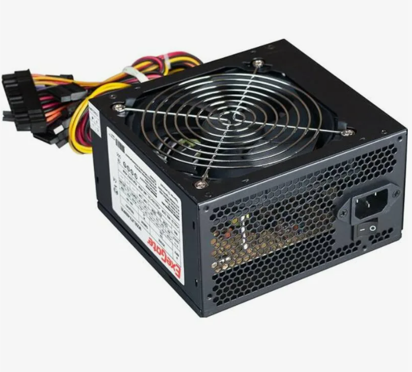
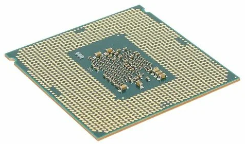
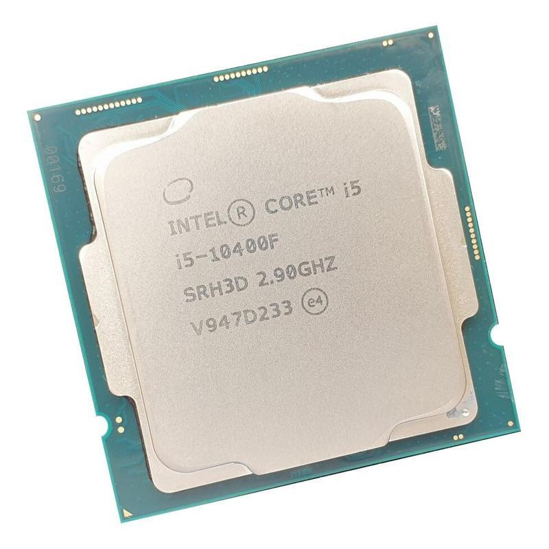
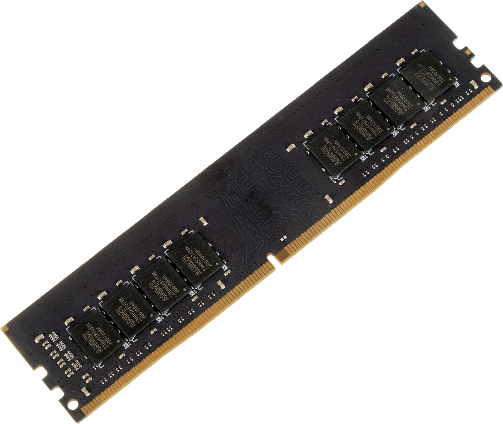
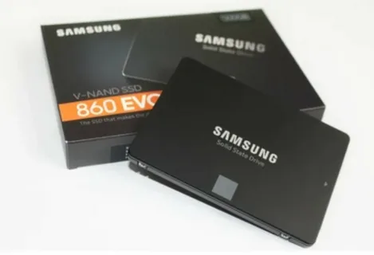
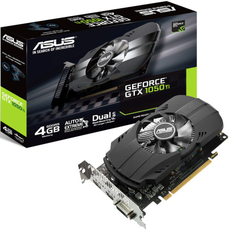

Блок питания
Блок питания (БП) для ПК — это устройство, которое преобразует переменный ток из розетки в постоянный ток нужного напряжения, необходимый для работы всех компонентов компьютера.
Материнская плата
Материнская плата (системная плата) для ПК — это основа компьютера, которая предназначена для соединения и координации работы всех компонентов компьютера.

Процессор
(Центральный) процессор — электронный компонент, который выполняет задачи, связанные с обработкой данных и выполнением инструкций программ.
Оперативная память
Оперативная память (ОЗУ) — временное хранилище данных, которое обеспечивает быстрый доступ к информации для процессора.
Примечание: информация стирается при отключении электричества!
Жёсткий диск
Жёсткий диск — устройство, которое предназначено для долговременного хранения данных на ПК. Используется для установки ОС, программ и файлов.
Примечание: бывают ДВУХ типов:
1. SSD
2. HDD
Видеокарта
Видеокарта (также видеоадаптер, видеоплата, графический адаптер, графический ускоритель) — устройство, которое отвечает за обработку и вывод изображений на экран монитора.
Примечание: преобразует цифровой графический образ, хранящийся в памяти компьютера, в форму, пригодную для вывода на экран.

Характеристики главных составляющих
| Составной элемент | Название модели | Дополнительные характеристики | Средняя стоимость | Тест на производительность | Фотография |
| Motherboard | Gigabyte H410M S2H | Version F3 ; Technology Co. Ltd. ; Socket LGA 1200 | 6.5 тысяч | Существует много разных программ для узкоспециального тестирования, поэтому и значения будут разные |  |
| CPU | (HexaCore) Intel Core i5-10400 | Comet Lake-S ; 2900 MHz ; 6 cores ; 12 threads | 10.5 тысяч | CPU Single Thread: 383.4 ; CPU Multi Thread: 2951.4 ??? |  |
| RAM (random access memory) | DDR 4 | 32 GBytes ; 2666 MHz ; Form-factor DIMM ; Memory module 1 | 13 тысяч | MEMORY READ: 20088 MB/s ; MEMORY WRITE: 17220 MB/s |  |
| Hard | Samsung 870 EVO 1TB | SSD ; SATA interface ; Flash memory V-NAND 3-bit MLC | 7 тысяч | MEMORY READ: 379.44 MB/s ; MEMORY WRITE: 356.71 MB/s ??? |  |
| GPU | NVIDIA GeForce GTX 1050 Ti | (GP107) ; 1455 MHz ; 768 cores ; 6 CUs ; Driver 560.94 | 14 тысяч | MEMORY READ: 4908 MB/s ; MEMORY WRITE: 7238 MB/s |  |